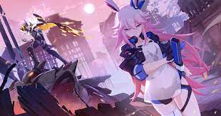

Guía para Abyss
El abyss es probablemente el modo más interesante del juego. ¿Cómo puedo mejorar?
En este juego hay un power creep respecto a los equipos meta que se pueden usar. Cada vez el juego te exige gear mas avanzado para poder ir avanzando.

inter
El siguiente video mostrará una pequeña guía para progresar en el abyss
Regresar a index
Regresar a la guía de intermedios